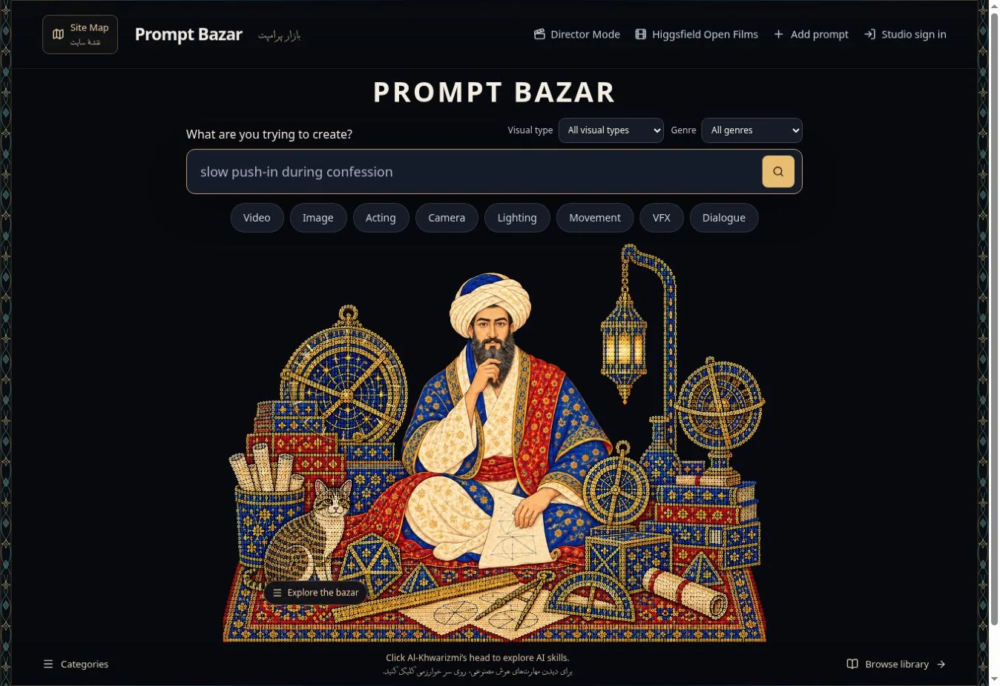
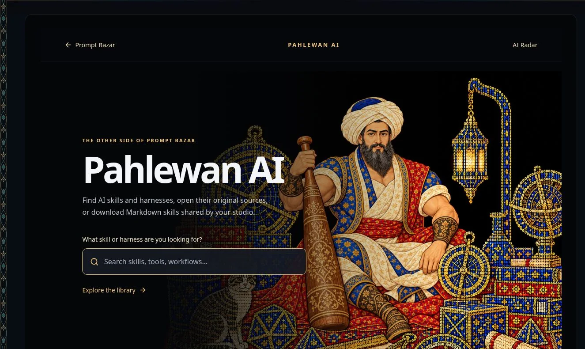
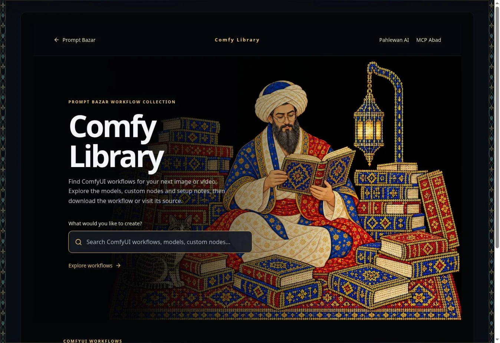

01
Prompt Bazar بازار پرامپت
Concept, UX/UI direction, development with AI
A workspace for AI filmmakers to find, understand and reuse prompts, tools and workflows. You can search prompts by model, genre and visual style, take one apart in the Prompt Scholar to see how it’s built, keep references in projects, and plan scripts and shots in Director Mode.
I gave it a Persian look on purpose: Al-Khwarizmi sits on the front page among his astrolabes. Then I kept prototyping and testing until it felt right.



Screenshots from a local preview of the current interface.